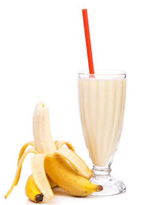

The Ultimate banana smoothie.Perfect for the power of a thousand .Very easy make just follow the steps listed below;
For a thicker smoothie, use a frozen banana instead. If you don't have a blender, you can use a food processor fitted with metal blades.
The more milk you use, the thinner smoothie you will get. For a thicker smoothie, use plain or vanilla yogurt instead.
If you are using frozen bananas, then you can skip the ice cubes—unless you like really thick smoothies.
There should be no lumps or clumps. From time to time, you may have to pause the blender, open it up, and push the ingredients down the sides with a rubber spatula.
You can enjoy it as it is, or you can garnish it with a dollop of whipped cream, banana slices, or a drizzle of honey.